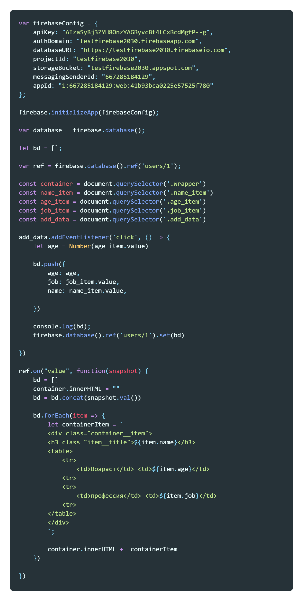
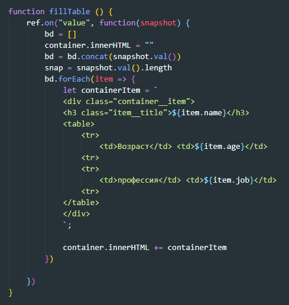

Шаг 1. Создание проекта
Для того что бы создать новый поект, заходм в консоль FireBase и жмем кнопку Create a New Project. Вводим имя нашего проекта и жмем продолжить. После этого откроется страница с настройками GOOGLE Аналитика. Ставим CheckBox "Отключить" и жмем кнопку "Создать проект"
После того как проект создастся, мы увидим боковую панель
В боковой панели выбираем элемент Hosting и справа в центральной части окна жмем кнопку Начать. Откроется инструкция с описанием того, что нужно сделать что бы создать репозиторий на локальном компьютере для работы с хостингом.
Шаг 2. Создание локального репозитория
Создаем папку с произвольным именем, в ней создаем папку с именем public, затем в этой папке создаем еще одну и так же называем ее public. В итоге получится вот такая картина

После этого запускам VS Code из этой директории и открываем консоль. Первое что нам надо сделать, это установить FireBase. Для этого в консоли вводим команду:
npm install -g firebase-tools
Теперь необходимо авторизоваться. Для этого в той же консоли вводим команду:
firebase login
Откроется браузер со страницей выбора учетной записи Google, выбираем учетку и жмем кнопку "Разрешить". После получаем уведомление о том, что все прошло успешно.
Теперь необходимо проинициализировать проект, для этого в терминале вводим команду:
firebase init
Откроется приветственное сообщение FireBase с вопросом "Are you ready to proceed?", вводим Y и жмем Enter. Далее откроется вот такой текст:

Здесь необходимо выбрать роли нашего проекта, пока нам нужен только ХОСТИНГ, поэтому клавишей "стрелкой" перемещаемся в низ до элемента hosting и для того что бы выбрать роль жмем "spase", после чего жмем ENTER
Следующим этапом нам необходимо указать, что это за проект.
Выбираем Use an existing project т.к. в FireBase мы уже создали проект. Жмем Enter и видим что система предложила выбрать проект который уже находится у нас в FireBase

Выбираем его и жмем Enter
Далее система спросит у нас хотим ли мы использовать нашу директорию в качестве public, жмем Enter. После этого система спросит нужно ли генерировать файл index.html? Жмем N и ENTER. После этого появится сообщение о том что инициализация выполнена успешно.
Шаг 3. Загрузка файлов на хостинг
Посе того как проект был проинициализировал, в папке с проектом создаем все необходимы файлы после чего в консоле вводим команду
firebase deploy
Каждый раз когда понадобится запушить данные на сайт вводим эту команду.
Шаг 4. Ссылка
Для того что бы посмотреть какой теперь у нас адрес нашего хостинга, заходим в консоль проекта и так же жмем Hosting. В разделе мы увидим вот такую картину:
Иными словами fireBase нам предоставляет аж две ссылки на наш сайт. Так же мы можем привязать к нашему хостингу пользовательский домен, т.е. можно сделать красивую ссылку.
Шаг 1. Создание проекта
Открываем консоль FireBase и жмем кнопку Создать проект, далее вводим имя проекта и жмем Продолжить. Откроется страница с настройкой аналитики от GOOGLE, отключаем ее и жмем Создать проект
Шаг 2. Регистрация приложения в Firebase
В центре страницы обзора проекта консоли Firebase щелкаем значок Интернета  , чтобы запустить рабочий процесс настройки.
, чтобы запустить рабочий процесс настройки.
Откроется страница создания веб приложения, вводим название нашего приложения и жмем Зарегистрировать приложение. После этого на этойже странице появится примерно такой контент:

Копируем весь этот код и вставляем в index.html файл своего проекта.
Помимо этого кода, необходимо скопировать SDN скрипта JS для работы с БД от FireBase, выглядит она вот так:
Список всех CDN библиотек FireBase можно получить пройдя по ссылке
В итоге наш HTML файл выглядит пока вот так:
Шаг 3. Создание базы данных
Возвращаемся в консоль FireBase и в боковой панели выбираем пункт Realtime Database, откроется раздел базы данных, на главной странице жмем кнопку Создать базу данных

Откроется модально окно с выбором режима БД

Выбираем вариант с тестовым режимом, так как в этом случае не нужно будет настраивать аутентификацию и всем будет доступны функции записи и чтения данных из БД. Жмем кнопку Включить, после чего появится структура нашей БД

Шаг 4. Получение ссылки на базу данных
В нашем html документе в разделе script необходимо добавить вот такую строчку
Здесь мы создаем переменную database куда помещаем нашу базу данных
Шаг 5. Добавление данных в нашу БД
Для добавления данных в бд используется два метода:
- set() - этот метод полностью перезаписывает ветку
- push() - подобно методу push у массивов, добавляет в конец массива элемент
Входным параметром этих методов является передаваемый элемент
Метод set()
Рассмотрим пример:
Допустим у нас есть пустая БД и нам в нее надо записать массив, элементами которого являются объекты. В этом случае метод set будет выглядеть вот так:

Здесь мы обращаемся к firebase, вызываем е него метод database(), для того что бы обратиться к БД. Далее мы вызываем метод ref(). Что делает этот метод? БД FireBase хранится в формате JSON, а это значит что структура данных представлена в виде дерева, которое может иметь вложенность (как указано в документации FireBase вложенность может достигать 32 уровней).Метод ref() позволяет нам указывать в какой рездел дерева мы помещаем наши данные. Если указать метод ref без входного параметра, то обращение будет к корневой ветви. Конкретно в нашем примере можно прочитать так: в корневом разделе есть подраздел users, у которого в свою очередь есть свой свой подраздел, название которого мы поместили для удобства в переменную userID
Далее мы вызываем метод set() и на вход даем ему наш массив. Теперь после выполнения такого кода, если вернуться в консоль FireBase и посмотреть как теперь будет выглядеть наша структура БД, то мы увидим вот такую картину:
Метод push()
По синтаксису метод push ничем не отличается от метода set/ Важно лишь понимать, что эти два метода делают принципиально разную работу. Вот как будет выглядеть метод push. если нам понадобится добавить к нашему массиву в БД еще одну запись:
Шаг 6. Получение данных из БД
Рассмотрим код:
Первое что мы делаем это помещяем наш путь к ветви в переменную ref. Далее мы создаем переменную, куда помещаем пустой массив, в последствии в этой переменной мы будем хранить наш массив данных, который мы будем получать из БД firebase
Далее мы обращаемся к ref и вызываем у него слушатель события on. Что это за слушатель? Уникальность этого слушателя заключается в том, что слушатель теперь будет реагировать на любые изменения в БД. Причем не важно обновим мы страницу или нет, слушатель будет создавать снимок нашей БД каждый раз когда в БД будут происходить какие-либо изменения. Даже если эти изменения делаем не мы. К примеру: другой пользователь внес запись в нашу БД, после этого данные которые мы получили до этого так же будут моментально обновлены.
У метода on есть два входных параметра: Первое это на какие изменения ему реагировать (в нашем случае - на изменение значений value). Второй параметр - это callback функция, которая будет выполняться каждый раз при регистрации события. Входным параметром этой callback функции является объект - snapshot - снимок данных. У этогообъекта есть метод val() который возвращает снимок данных.
Таким образом мы обращаемся к нашему пустому массиву и с помощью метода concat дописываем в него данные которые получили из БД
Пример моей функции
Код JavaScript
Метод once()
В некоторых случаях нам может потребоваться моментальный снимок наших данных без отслеживания изменений, например, при инициализации элемента пользовательского интерфейса, который вы не ожидаете изменить. Вы можете использовать метод once() чтобы упростить этот сценарий: он срабатывает один раз и больше не запускается.
Шаг 7. Редактирование данных
Для того что бы отредактировать запись используется метод update(). Рассмотрим синтаксис на примере:
Здесь мы создали кнопку change_last, на которую вешаем слушатель события на клик. Далее мы помещаем в переменную ref относительный путь до элемента который будем редактировать. Зачем было сделано именно так? Для удобства, ведь этот путь будет динамическим. Здесь мы помещаем весь массив данных в переменную и получаем длину нашего массива. Таким образом мы получаем индекс нашего элемента массива который будем редактировать.
Далее к ref мы применяем метод update и на вход даем ему новые значения
Добавление новой записи с помощью метода update()
Рассмотрим код:
На этот раз в переменную ref мы помещаем путь с использованием всей длины массива (в переменную snap мы поместили значение которое вернет snapshot.val().length) Допустим у нас массив состоит из 4 элементов, т.к. индексация начинается с 0 то индекс последнего элемента будет 3, но длина массива будет равна - 4. А значит элемент с индексом 4 не существует. Если применить метод update к элементу которого нет, то метод его создает. Таким образом с помощью метода update можно добавлять новый элемент массива, указав ему несуществующий индекс.
Шаг 8. Удаление данных
Для удаления данных используется метод remove(). Рассмотрим пример:у
Здесь точно так же как и с update, сначала надо указать таргет, над каким элементом будет проведена манипуляция (переменная ref) b к этому элементу применяем метод remove()
Так же можно удалять запись с помощью метода update задав ему входной параметр null
Шаг 9. Получение promise
Чтобы узнать, когда наши данные переданы на сервер базы данных Firebase Realtime, мы можем использовать Promise . И set() и update() могут возвращать Promise. Пример:
Шаг 10. Запись данных в автономном режиме
Если клиент потеряет сетевое соединение, ваше приложение продолжит работать правильно.
Каждый клиент, подключенный к базе данных Firebase, поддерживает собственную внутреннюю версию любых активных данных. Когда данные записываются, они сначала записываются в эту локальную версию. Затем клиент Firebase синхронизирует эти данные с удаленными серверами баз данных и с другими клиентами по принципу «максимальных усилий».
Шаг 11. Фильтрация данных
Ограниченное количество результатов
С помощью метода limitToFirst() мы можем задать сколько нам нужно отобразить элементов. Как это выглядит на практике?
Для начала рассмотрим одну функцию. Эта функция получает массив элементов и с помощью интерполяции распределяет данные БД по элементам верстки и заполняет родительсткий блок дочерними блоками
Здесь важно подметить, что метод on мы применяем к объекту ref. Этот объект мы определили ранее вот так:
Теперь мы создали кнопку и повесили на нее обработчик события на клик. Вот как он выглядит:
Создаем переменную, куда помещаем значение поля input (sum_items). Далее проверяем что бы число введенное в это поле было положительным. После этого перезаписываем переменную ref с использованием метода limitToFirst(), которому на вход даем значение введенного в поле input. После этого обновляем заполнение верстки вызывая функцию fillTable